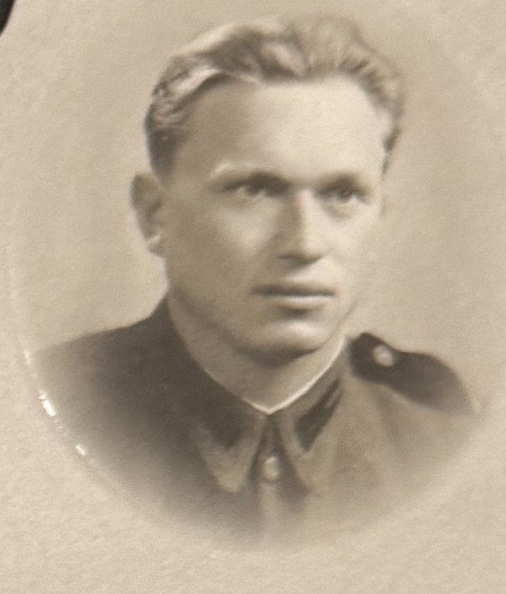
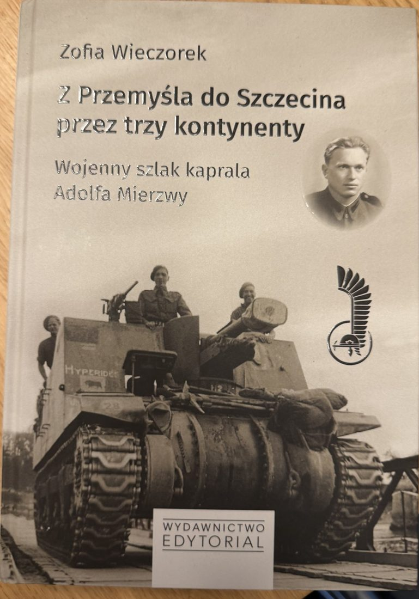
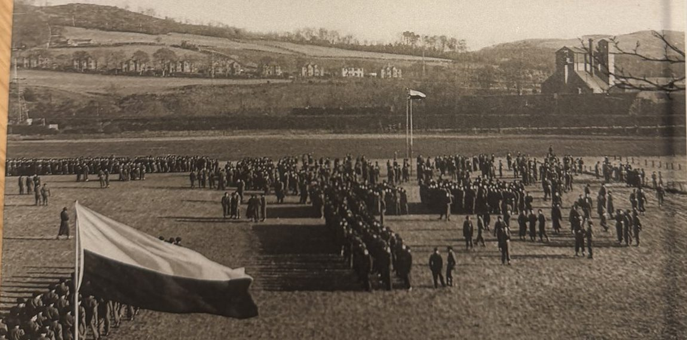

Z Przemyśla do Szczecina przez trzy kontynenty. Łagry NKWD, armia gen. Andersa, 1. Dywizja Pancerna gen. Maczka i powrót do domu.

Mapa jest schematyczna. Szczegóły każdego etapu uzupełnimy na podstawie kolejnych rozdziałów książki.
Na początku były tylko opowieści Taty, odręczne notatki i wywiad nagrany na kasecie TDK. Potem przyszły kwerendy w archiwach w Polsce, Londynie i Kalifornii.

To nie jest typowa praca historyczna ani reportaż. To relacja naocznego świadka, opowiedziana przez córkę. Książka pokazuje trudną drogę do wolności, od pierwszych dni września 1939 r. aż po powrót żołnierza-tułacza do kraju w czerwcu 1947 r., i dalej, przez całe jego życie.
Dwanaście rozdziałów prowadzi przez kolejne etapy:
Autorka napisała ją dla swoich synów, Łukasza i Wojciecha, dla wnuczek Dominiki, Darii i Gabrysi oraz dla braci, aby pamięć o Ojcu, Dziadku i Pradziadku przechodziła na kolejne pokolenia.
„Niniejsze wspomnienie poświęcam swoim Rodzicom, a w szczególności mojemu Tacie, który zawsze był i, mimo że odszedł, nadal jest dla mnie niezłomnym bohaterem.”Zofia Wieczorek, ze wstępu do książki

Stronę prowadzi Zofia Wieczorek, córka kaprala Mierzwy. Jeśli Twój dziadek służył w 1. Dywizji Pancernej, przeszedł łagry NKWD albo szlak armii gen. Andersa i masz zdjęcia, listy lub wspomnienia, napisz.